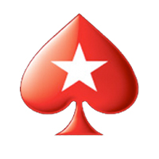
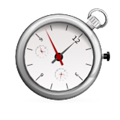
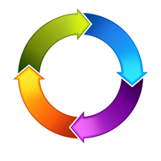

"DevSwitcher is a FireFox Toolbar Extension for PokerStars staff to simplify switching between our global websites and development environments."
PokerStars.
Awesome tool for PokerStars staff
Speed.
Work faster, much faster
Productivity.
Being faster is more productive
Simplicity.
Keeping it simple, oh so simple
Check out some pics
The story of DevSwitcher
Hi, I'm Steven, I work at PokerStars and I had an idea.
I joined PokerStars in May 2011 as a Web Developer and during the first few months, found myself constantly repeating the multi-clicking task of changing the URL from one global PokerStars website to another.
In my previous job I was an Object Oriented Programmer and one thing I learned was, that if you are repeating yourself, then you are wasting time. I was therefore wasting time. Collectively our department was wasting a lot of time.
After a few weeks of deliberation my idea of DevSwitcher was born. A Firefox Extension that, with a single click of a button, access to each and every PokerStars website world-wide was achieved.
Now a global reality
DevSwticher is now packed with additional features that makes this extension attractive to just about anyone, anywhere, associated with PokerStars. Enjoy :)
- Switch easily between several development environments
ie. dev.pokerstars.com → www.pokerstars.com - Switch easily between PokerStars global websites
ie. www.pokerstars.com → www.pokerstars.cz - Switch easily to the popular pages
ie. www.pokerstars.com → www.pokerstars.com/poker/promotions/ - Switch easily from temp files to a development url
ie. file:///T:/pokerstars.si/htdocs/wcp/ → www.pokerstars.si/wcp/ - Ability to add custom buttons via the toolbar palette
(If you dont want the full toolbar)
1. Click this button to download whats called an .xpi file
2. Drag and Drop the downloaded xpi file on to your Firefox browser
3. Follow the installation instructions.